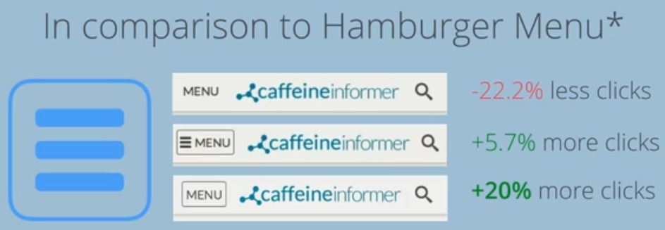

Notes
Rewiring Your Brain for Mobile First Experience (Video)
One of the things I am thankful we were taught in my WDD 230 (Frontend Web Development I) class is we were taught to create our sight from a small device up to larger devices. In this video it is referred to as Mobile First. Here are some benefits:
- Time consuming and costly for a full build
- Provides best experience across many devices
- Address contraints of mobile size/bandwidth
- Future friendly and ready for growth
A good reason we work from mobile first because the desktop conputer sales are declining and the sales for mobile devices are inclining.
How to Improve Mobile UX by Understanding Users (Video)
One part I thought was interesting was reachability. It makes total sense. I never thought about how some sites are put together when it comes to reachability. If you think about it, that is why the keyboard as at the bottom of the screen. It never bothered me when it came to touching/clicking around the top to navagate through a site. But I can see how it could bother some people.
I found it very interesting how much speed can affect businesses. I know people can leave a site if it takes too long to load but I did not think about the small numbers like 30 seconds or even 2 seconds.
- Google: 1/2 second delay = 20% drop in traffic
- Bing: 2 second delay = 4% drop in revenue
- AOL: Fastest 10% of users stay 50% longer
Things we can do to make sure things are loading quickly for our users.
- Reduce image usage throughout sites/apps
- SVG/Webfonts are lower bandwidth
- Optimized and Minify CSS & JS files
- GZIP files to eliminate unnecessary data
I learned/heard about SVG files in WDD 230 but never used them. I will have to try them and see how much better it is using them. I would like to find out how to Optimize and Minify CSS & JS files and also how to use GZIP.
Better Mobile UX through Strategic Menu Design
I am really interested in finding out how to move the nav-bar from the top of a mobile device from the top to the bottom of the screen. I have been using the Facebook app for some time on my iPhone but did not give it any thought when I created my nav-bar for my WDD 230 class.
I found it interesting to see the comparison of the Hamburger Menu button. I think I might actually use the word Menu in a button instead of the hamburger icon. We will have to wait and see. It may not happen...lol

Designing Intuitive and Mobile Friendly Mobile Forms
I really liked seeing the different examples that were shown how one could design a form. At this point of my knowledge of programming websites, I tend to need something to give me an idea how I can make things look. I hope in the near future I can be a little more creative. From my experience,most of the forms I have seen for mobile devices run off the page and you need to scroll down to see the rest of the form. Here are some different ways to display your form:
- Label outside the input field
- Placeholders inside the input field
- Placeholder is moved to the top of the input field when text is entered.
- Pending on the choice the user makes, other fields are displayed
- Autocomplete enabled
I always wondered how websites were setup so you could just click on a phone number and are able to call it.
example: <a href="tel:14035551234">(403) 555-1234</a>. It was also intresting how you could set the input of your form to enter credit card information and allow the user to show and hide their password.
Code
Show Congratulations Message
Story Editor
Story Name:Questions:
Are Google Fonts the same as Webfonts?
I did have a question about the local storage. My questoin was how do we store the text for longer periods of time and be able to retrieve it. After placing the code in this page I clicked on the link Google Fonts hit the back button, clicked the Find and Edit It button and the text showed up. So I think I got my answer.